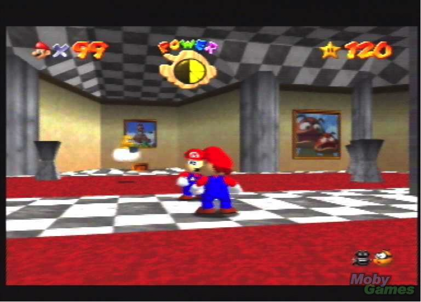

A matemática está presente em vários momentos de nossas vidas. Desde o momento que acordamos e temos que pensar quantos minutos faltam para as 8 da manhã, passando por quanto podemos gastar no mercado e até mesmo nas teorias números da loteria.
No desenvolvimento de jogos de vídeo-game a coisa anda no mesmo caminho. Se você for observar os três principais nichos de jogos, todos eles têm a matemática envolvida de alguma forma.
Quais seriam esses três? FPS, que trataremos neste artigo, Estratégia e Simulação.

Lógico, essa é apenas a noção introdutória. É importante lembrar, também, que existem os chamados jogos em “terceira pessoa”. Exemplo clássico do gênero – e paradigma – é Super Mario 64. Nele, a nuvem Lakitu filma Mario durante sua caça às 120 estrelas para salvar a Princesa Peach. Ou seja: o ponto de referência principal é Mario. O ponto de referência secundário – o cameraman – era Lakitu. O que tínhamos aqui? Simples, é só adotar a teoria exposta acima. Mario interage com o meio e *Lakitu *interage com o jogador quando é necessário adotar um outro ponto de referência no eixo x/y/z para acompanhar a interação de Mario com o meio.
O bojo é, então, simples: tudo é ponto de referência, planos e geometria espacial. Jogar Goldeneye parece simples em 1997 – mas você, quando criança, nunca imaginou que mesmo em linguagem simples, a matemática estaria tão presente.